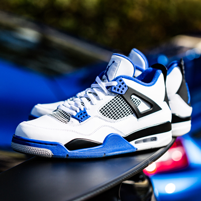

Summary

Over the years I’ve been afforded the ability to pursue my passions from - Aviation to Automobiles. My work experience and education by extension includes, Systems Engineering, Flight, Software Development, Planning and Entrepreneurship.
Being part of the entrepreneurial world has truly been fulfilling and rewarding culminating in a firm interest in startup investment, social media and further development as a technologist.